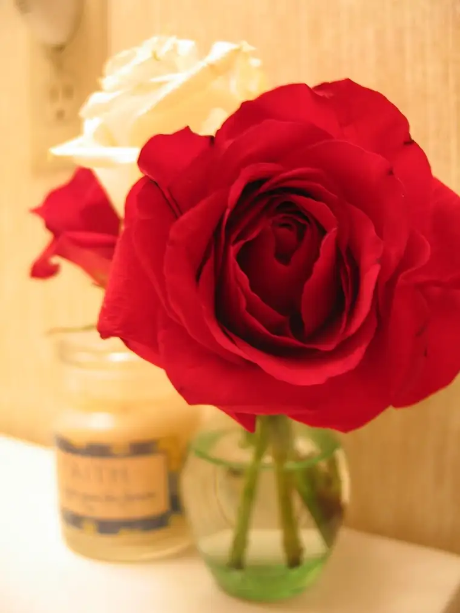

I’ve been thinking about contradiction lately, and how the faith life stands in contrast to the secular world.
This past Saturday, for example, our parish sponsored a couples’ night out. I don’t know how many couples ended up taking part, but the third floor of the Plains Art Museum was buzzing with bodies — married couples there to toast to their sacrificial commitment, to share a meal with other faith-filled couples and to hear a talk by our bishop on some tools that are helpful to have in order to maintain a strong marriage in today’s world.

Troy and I both really enjoyed this evening. First of all, it was just plain lovely, with tables decked out in roses and pretty table settings and wonderful food (we each choose the “Chicken Veronique” for our main entree). We were allowed to grab the roses from the table at the end, so we did (I’ve been admiring them all week long)! Those things aside, the evening felt powerful in part because each of us present knows how difficult marriage can be, and yet…we were there as a witness to what is possible when Christ enters in. Yes, there is going to be suffering, but with grace, it can be overcome. I felt the Holy Spirit in the room that evening, and I felt the contradiction of our presence in light of what the secular world would purport instead.
{kind=link}
The evening prior, our middle son FINALLY lost his front tooth. That bugger had been dangling far too long and I know he was relieved to get rid of it to make way for something new. This all coincided with his First Reconciliation celebration the next morning. I can’t help but draw the parallel between losing an old tooth and losing the old baggage of sin. I would have loved to have been a fly on the wall of the confessional. I don’t know what he confessed, but I do know he came out seeming pretty light, and that his penance was “one Haily Mary for you, Mom, and an Our Father for Dad.”
The more sin we bring to light, the more grace can enter in, the more joyful we become because we are no longer dragging our pack of sin around behind us. I know not all faith traditions believe in confessing to a priest, but it’s a practice I’ve come to appreciate more and more. There’s something healing about saying the words out loud…to a real person…that can’t be fully replicated in quiet prayer.
